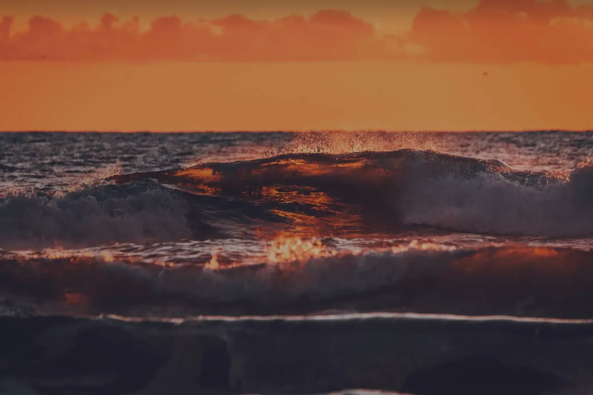

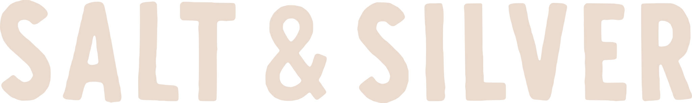
Alles, woran man euch erkennt, an einem Ort: Wortmarke und Zeichnungen, Farben, Schrift, Bilder und die Bausteine der neuen Website.

Kapitel 01
Reisen, Surfen, Kochen.
Drei Dinge halten eure Marke zusammen, auf der Website, auf der Karte und auf dem Sticker.
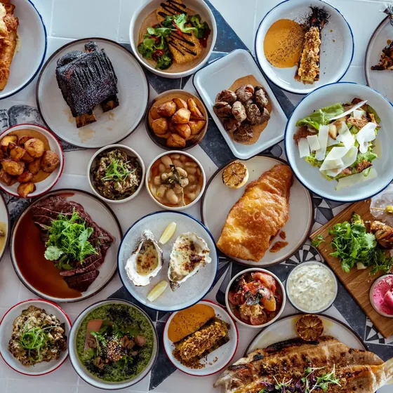
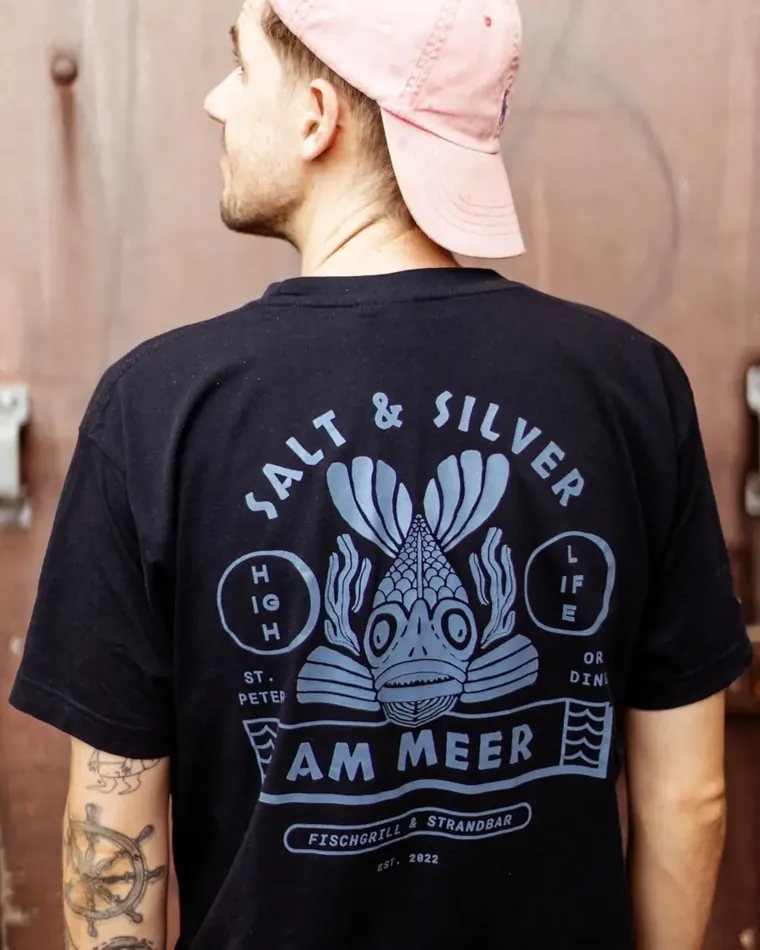

Kapitel 02
Die Wortmarke.
Schmal, hoch, in Versalien. Sie steht in Tinte auf hellen Flächen und in Creme oder Weiß auf Nachtblau.
 Tinte auf Papier
Tinte auf Papier- Nie stauchen. Die Wortmarke behält ihr Verhältnis, auch am Handy.
- Nie auf ein unruhiges Foto. Dann lieber auf eine ruhige Fläche daneben.
- Nie kleiner als 90 Pixel in der Breite, im Druck nie schmaler als 24 Millimeter.

Kapitel 03
Eure Zeichnungen.
Neunzehn Zeichen aus eurer Welt. Jedes gibt es in Tinte und in Creme, als Datei zum Vergrößern ohne Verlust.

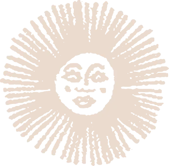
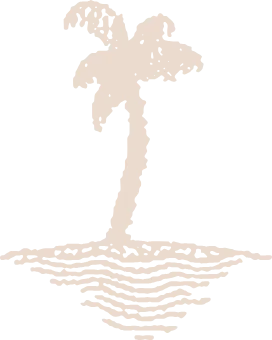
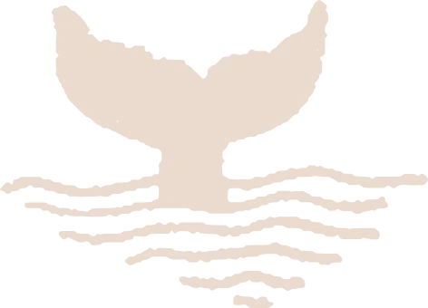
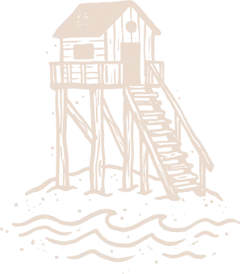
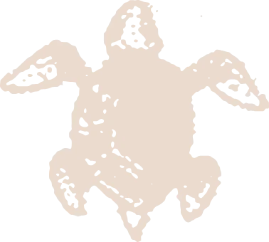
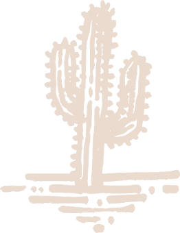
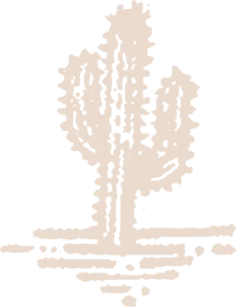
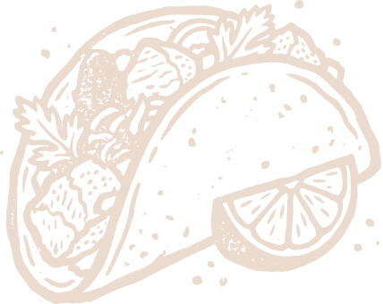
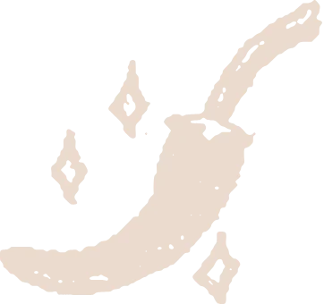
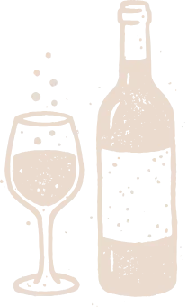
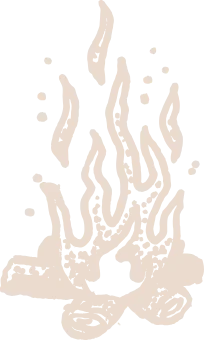
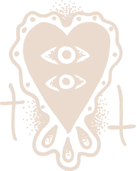
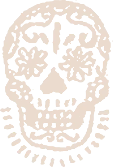
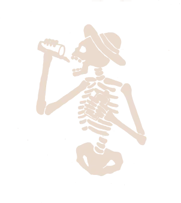
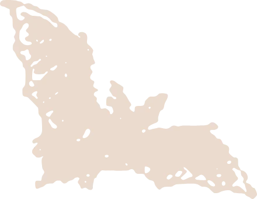
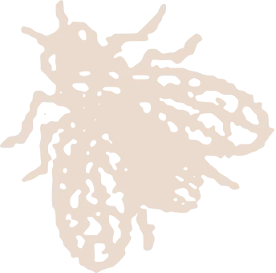
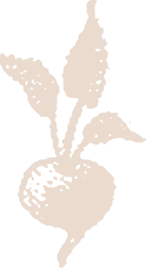
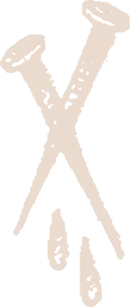

Kapitel 04
Acht Farben.
Helle Töne wie Sand und Papier, drei Töne Nachtblau, und ein Rot, das immer nur ein Punkt bleibt.
- Papier#f5eee6Helle Flächen, Seiten zum Lesen
- Creme#ebdbceKnöpfe auf Dunkel, betonte Worte
- Taupe#9e947fZweite Zeile im Titel, kleine Schrift
- Navy#1f213bDunkle Flächen im Wechsel
- Knopf-Blau#151929Knöpfe, Leiste, dunkle Felder
- Nacht#111421Grundfläche der Website
- Tinte#0b0c10Schrift auf Hell
- Rot#ff3132Ein einzelner Punkt, nie eine Fläche
Woher die Töne kommen
Gemessen in vier eurer Fotos: Die Farben der Marke liegen schon im Abendlicht am Meer, im Hafen und auf dem Tisch.
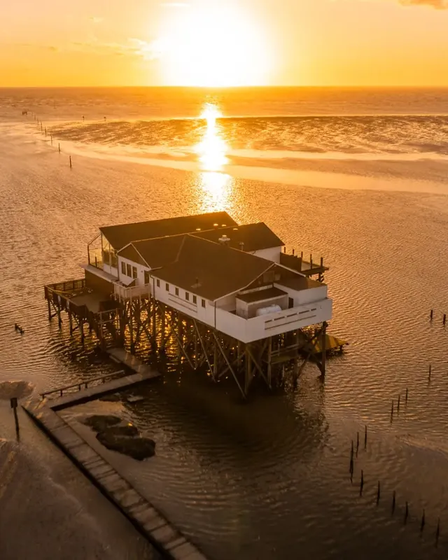
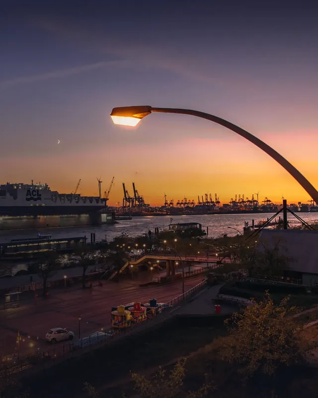
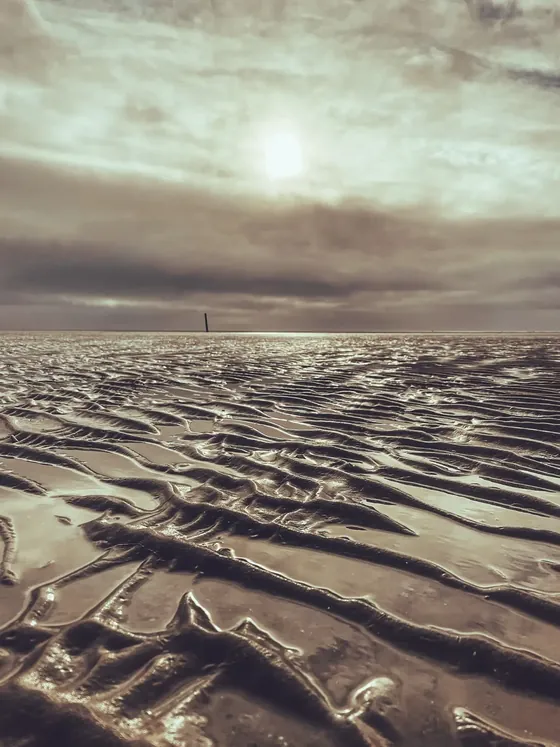

Kapitel 05
Drei Schriften.
Eine für die großen Worte, eine zum Lesen, eine für das Kleingedruckte.
REISEN. SURFEN. KOCHEN.
Life is short – make it nice!
HAMBURG · SANKT PETER-ORDING

Kapitel 06
Eure Bilder.
Sechs Welten, ein Licht. So sehen Fotos aus, die nach Salt & Silver aussehen.
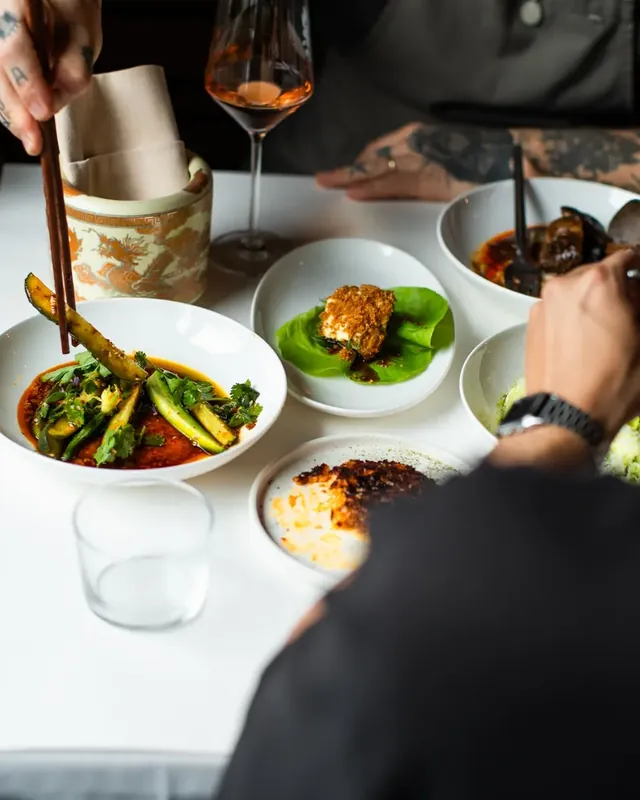
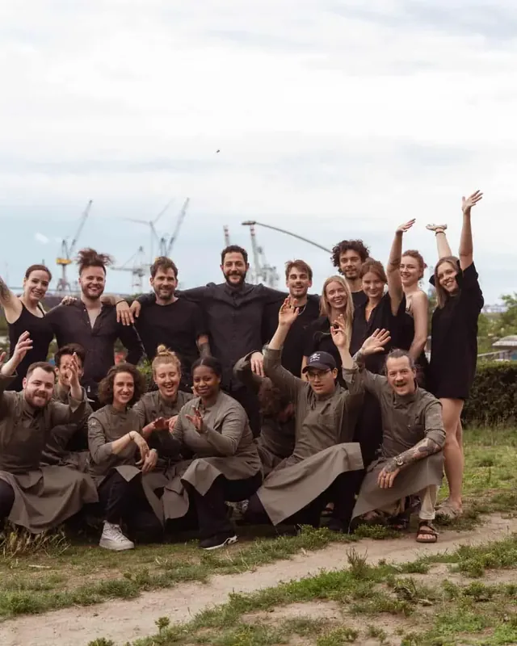
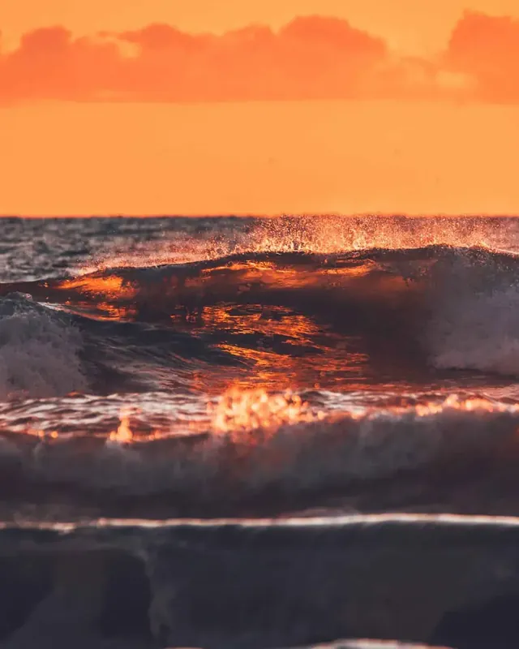
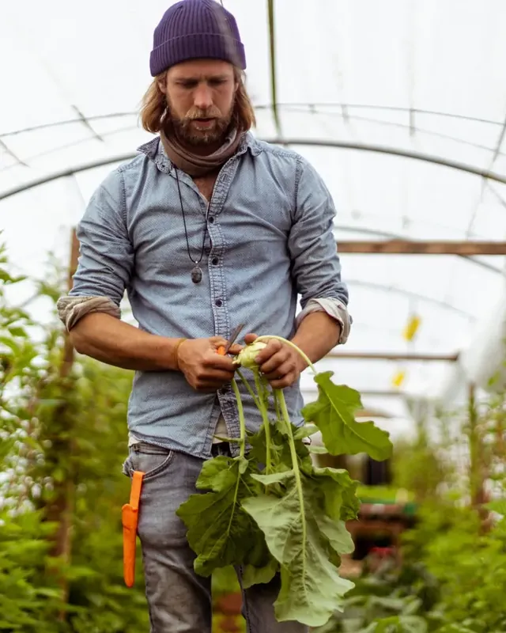
- EchtNur eure eigenen Fotos. Kein Bild aus dem Katalog, keins aus der Maschine.
- WarmAbendlicht, Gegenlicht, Kerze. Wenn es die Wahl gibt, gewinnt das Bild mit der tiefen Sonne.
- GroßEin Foto über die ganze Breite sagt mehr als sechs kleine nebeneinander.

Kapitel 07
Die Bausteine.
Aus diesen Teilen ist die neue Website gebaut. Wer sie benutzt, bleibt im Stil.
Eine Pille mit rundem Knauf. Dunkel auf Hell, hell auf Dunkel.
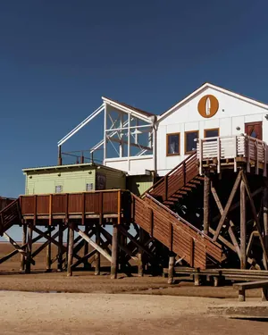
Fotos mit rundem Kopf, wie ein Brett, das im Sand steht.
Doppelter Rand um jedes Foto, der Ort sitzt in der ausgeschnittenen Ecke.


Euer Satz und eure Zeichen ziehen durch, nur solange man hinsieht.
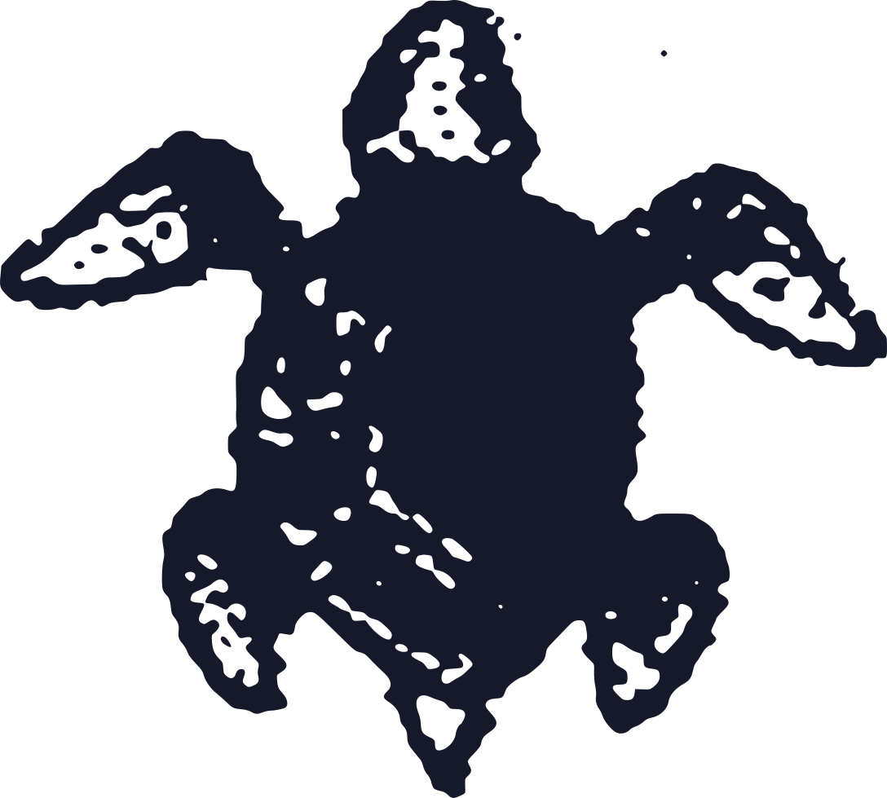
Kapitel 08
Alles zum Weitergeben.
Wortmarke, Emblem, Zeichnungen und Farben liegen als Dateien bereit, für euch, eure Agentur und die Druckerei.